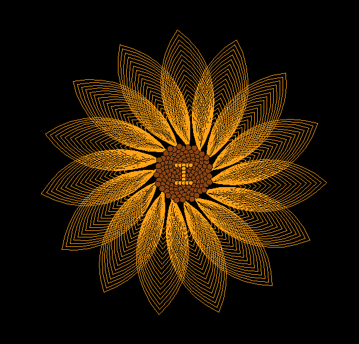

FLORES AMARILLAS
Pensé en como darte flores desde lejos y de una forma no capitalista... esto fue lo que salio
No se si te acordaras... pero el año pasado te di esta flor (aunque en destiempo).
Pero sos una mujer que merece mas que una flor amarilla o un ramo... mereces una PAGINA DE FLORES AMARILLAS
y si bien podria estar dandote yo las flores...
(se supone que somos nosotros)
Como esto es una pagina y aca todo puede pasar... preferí decirle a mi amigo Lando que te las de por mi
(es real) (se tostó un poquito)
Espero que te gusten las flores amarillas y que sepas que sos una persona muy especial para mi y por esto este año decidí no ser cagón y mostrarte el regalo en tiempo.